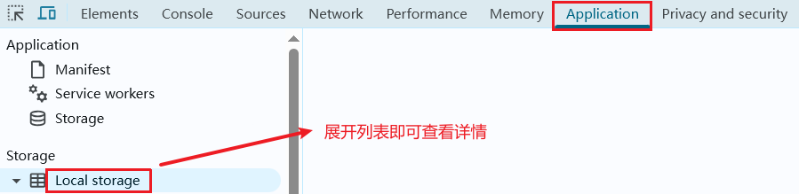

编写于2025年05月13日 修订于2025年10月28日 | 来源：https://www.myouone.xyz
web APIs包含BOM和DOM。
BOM（浏览器对象模型）：是浏览器提供的 API，用于操作浏览器窗口、标签页、历史记录、地址栏等浏览器功能。
核心对象：window（顶级对象），包含document、location、navigator、history等子对象。
DOM（Document Object Model——文档对象模型）：用来呈现以及与任意HTML或XML文档交互的API，换句话说就是浏览器提供的一套专门用来操作网页内容的功能。最大对象：document。
DOM树：直观体现标签与标签之间的关系。
window (顶级对象) ├── document // DOM的入口 ├── location // 操作URL ├── navigator // 浏览器信息 ├── history // 历史记录 ├── screen // 屏幕信息 ├── setTimeout() // 定时器 └── alert() // 弹窗
document.querySelector('div'); // 选择匹配的第一个元素 document.querySelector('.box'); document.querySelector('#box'); document.querySelector('ul li:first-child').style.color = 'red'; // 设置样式 document.querySelectorAll('ul li'); // 获取全部元素，返回伪数组，没有push、pop等方法 document.querySelectorAll('ul li')[0]; document.getElementById('box'); document.getElementsByTagName('div'); // 返回伪数组 document.getElementsByClassName('box'); // 返回伪数组
对象.innerText; // 获取内容 对象.innerText = '<strong>aaa</strong>'; // 修改内容，不解析标签，如这里的strong不会被解析为标签，并且“aaa”也不会加粗。 对象.innerHTML = '<strong>aaa</strong>'; // 修改内容，解析标签，如这里的strong会被解析为标签，并且“aaa”也会加粗。
对象.属性 = 值; // 如果存在就更新，如果不存在就新增。 // 通过style形式操作CSS 对象.style.样式属性 = 值; // 中划线样式属性改成小驼峰形式书写 // 通过类名的形式操作CSS 对象.className = ''; // 1、由于class是关键字，所以使用className代替；2、className是用新值替换旧值，如果需要添加一个类，需要保留之前的类名。 // 通过classList操作类控制CSS 对象.classList.add('类名'); // 追加 对象.classList.remove('类名'); // 删除 对象.classList.toggle('类名'); // 切换，存在就删除，不存在就添加，类似开关
// 获取：DOM对象.属性名，表单只能通过value属性获取 对象.value; // 设置：DOM对象.属性名 = 值 对象.value = 'aaa'; // 单选框、复选框的值为布尔值 对象.checked = true; // 字符串中的空字符串为false，其余情况为true 对象.checked = 'false'; // 'false'隐式转换布尔值为true // button的disabled属性（禁用按钮点击）也通过布尔值来设置
html5推出的自定义属性，标签一律以data-开头，如“data-id”，dom对象上一律以dataset对象方式获取。
<div data-id='1' data-spm='2'></div> const one = document.querySelector('div'); // setAttribute方式现在不推荐使用，因为这种方式设置的属性比较乱，随便设置，不便于管理，要让自定义属性定义更标准 // 获取自定义属性 one.dataset.id; one.dataset.spm; // 设置自定义属性 one.dataset.id = '2';
setInterval(函数, 间隔时间); // 每隔一个间隔时间，调用一次指定函数； // 定时器返回值为定时器id，数字类型 let n = setInterval(function() { ... }, 1000); // 关闭定时器 clearInterval(n); // 参数为定时器id
// 事件绑定有两种写法 元素对象.on事件 = function() {} // 如：onclick 元素对象.addEventListener('事件类型', 函数); // on的方式会被覆盖，推荐使用addEventListener的方式，可以绑定多次。 // click就是点击事件 let btns = document.querySelectorAll('button'); for (let i = 0; i < btns.length; i ++) { btns[i].addEventListener('click', function () { document.querySelector('.pink').className = ''; this.className = 'pink'; }) }
// 鼠标事件 click // 鼠标点击 mouseenter // 鼠标经过 mouseleave // 鼠标离开 // 焦点事件 focus // 获得焦点 blur // 失去焦点 // 键盘事件 keydown // 键盘按键按下触发 keyup // 键盘按键抬起触发 // 文本事件 input // 用户输入事件
事件对象是有事件触发时的相关信息。例如：鼠标点击事件中，事件对象存储了鼠标点在哪个位置等信息。
使用场景：比如在键盘事件中，可以获取究竟是按下了哪个键，从而做出不同的反应。
如何使用：事件绑定回调函数的第一个参数，通常命名为event、e等。
获取对象属性可以先打印对象，再获取对应的属性。
环境对象指函数内部特殊的变量this，它代表着当前函数运行时所处的环境。
this指向的粗略规则：谁调用函数，this就是谁。非严格模式下，普通函数this指向window，事件监听中，指向调用者，箭头函数没有this，this指向可以改变。
如果将函数A作为参数传递给函数B时，称A为回调函数。
事件流是事件完整执行过程中的流动路径，分捕获和冒泡两个阶段。
事件捕获阶段：document → element html → element body → element div（父到子），点击了一下div，捕获的流向
事件冒泡阶段：element div → element body → element html → document（子到父），当一个元素的时间被触发时，同样的事件（如：click）会依次在该元素的所有祖先元素中依次触发。
<body> <div class="father"> <div class="son"></div> </div> <script> // 第三个参数为布尔值，true表示捕获阶段触发，false表示冒泡阶段触发（默认） document.addEventListener('click', function() { console.log('我是爷爷') }, true); document.querySelector('.father').addEventListener('click', function() { console.log('我是爸爸') }, true); document.querySelector('.son').addEventListener('click', function() { console.log('我是儿子') }, true); </script> </body>
默认有冒泡模式的存在，所以很容易影响到父级元素，可以通过阻止冒泡的方式将事件限制在当前元素内。
事件对象.stopPropagation();
传统的on事件可以直接赋值null即可，如：对象.onclick = null;
addEventListener的方式使用：removeEventListener(事件类型, 事件处理函数, [捕获或冒泡阶段]);
注意：addEventListener方式使用匿名函数无法被解绑。
如果同时给多个元素注册事件，一般可以采用for循环来做，事件委托可以只注册一次事件就达到这个效果，原理就是采用了事件冒泡的特点。
document.querySelector('ul').addEventListener('click', function(e) { // this是ul，可以通过事件对象的target属性来获取具体点击了哪个对象 console.dir(e.target); // e.target就是点击的对象，console.dir用来打印对象 // 如果要限定点击的元素类别，可以通过对象的tagName属性来判断点击了什么元素 console.log(e.target.tagName); })
e.preventDefault();
// 页面加载事件——可以等所有资源加载完成以后再执行js代码，也可以将script代码写到head标签里边 // 事件名：load，监听页面所有资源加载完毕 window.addEventListener('load', function() { ... }); // 给window注册事件 // 事件名：DOMContentLoaded，初始的html文档被完全解析完成以后，该事件触发，无需等待样式表、图像等完全加载，会load快 document.addEventListener('DOMContentLoaded', function() { ... }); // 给document注册事件 // 页面滚动事件 // 事件名：scroll window.addEventListener('scroll', function() { ... }); // 监听整个页面的滚动 // scrollTop属性：竖向滚动条滚去多少 document.documentElement.scrollTop; // 整个页面滚了多少 document.documentElement.scrollTop = 100; // 设置整个页面滚动的初始值 // document.documentElement 和 document.querySelector('html') 是一样的对象，但是前者是document的属性，可以直接使用，性能开销极小。 // scrollLeft属性：横向滚动条滚去多少 // 页面尺寸事件 // 事件名：resize，窗口尺寸改变时触发事件，可以用来做响应式。 // clientWidth属性、clientHeight属性：可以用来获取元素可见部分的宽和高（不包含边框、margin、滚动条等，包含padding）
// 获取宽高 // offsetWidth属性 和 offsetHeight属性，和clientWidth、clientHeight的区别是获取的值包含边框，隐藏元素获取到的值为0。 // 获取位置 // offsetLeft属性 和 offsetTop属性，距离自己有定位的父级元素的左、上距离（如某些父元素设置了position，算距离最近的），只读属性。
// 日期对象 const date = new Date(); const date = new Date('2025-06-02'); // 日期对象方法 date.getFullYear() date.getMonth() date.getDate() date.getDay() date.getHours() date.getMinutes() date.getSeconds()
时间戳可以用来计算倒计时。
// 获取时间戳有三种方法 const date = new Date(); date.getTime(); +new Date(); Date.now(); // 获取指定时间的时间戳，加一个时间参数即可，如下： +new Date('2025-06-02 08:00:00');
// 查找节点 // 父节点 子元素.parentNode // 子节点 父元素.childNodes // 得到全部信息，不推荐使用 父元素.children // 返回伪数组 // 兄弟节点 document.querySelector('ul li:nth-child(2)'); 元素.nextElementSibling // 下一个兄弟节点 元素.previousElementSibling // 上一个兄弟节点 // 增加节点 // 1、创建节点 const e = document.createElement('标签名'); e.innerHTML= `...`; // 2、追加节点 父元素.appentChild(要插入的元素); // 插入到父元素的最后一个元素 父元素.insertBefore(要插入的元素, 在哪个元素前边); // 插入到指定元素前边，第二个参数可以这样写：ul.children[0] // 克隆节点 元素.cloneNode(布尔值); // 默认false，true表示会包含后代节点一起克隆，false表示克隆时不包含后代节点。 // 删除节点 父元素.removeChild(要删除的元素);
touchstart事件：手指触摸到一个DOM元素时触发
touchmove事件：手指在一个DOM元素上滑动时触发
touchend事件：手指从一个DOM元素上移开时触发
BOM是浏览器对象模型，BOM是整个浏览器，BOM包含DOM，还包含navigator、location、history、screen等。
window是最大的对象，window对象的属性和方法在调用时可以省略window，如直接用document调用方法，而不是window.document。
// 延时执行回调函数，只执行一次 let timer = setTimeout(回调函数, 等待毫秒数) // 清除延时函数 clearTimeout(timer);
js代码是从上往下顺序执行。浏览器有两种引擎，一种是渲染引擎，一种是js解析器，如谷歌浏览器是v8引擎。
js是单线程语言，这就意味着所有任务都需要排队，前一个任务结束，才会执行下一个任务，如果遇到耗时的任务，就会造成页面阻塞，为了解决这个问题，利用多核CPU的计算能力，H5提出Web Worker标准，运行js脚本创建多个线程，js中出现了同步、异步。
同步和异步的区别就是流水线上各个流程的执行顺序不同。
同步任务在主线程上执行，形成执行栈。
异步任务有三种类型：
异步任务添加到任务队列中。
js先执行执行栈中的同步任务，异步任务放在任务队列中，一旦执行栈中的所有同步任务执行完毕，系统会依次读取任务队列中的异步任务，被读取的异步任务进入执行栈开始执行。
事件循环：主线程不断的重复获得任务、执行任务、再获得任务、再执行，这种机制被称为事件循环。
location对象拆分并存储了url地址的各个组成部分。
常用属性和方法：
href：获取完整的url地址，赋值时可以地址跳转。
search：url地址中?及后边的部分。
hash：哈希，url地址中#及之后的部分，单页面应用，如网易云音乐中：https://www.music.163.com/#/download。
reload()：刷新，传入参数true是强制刷新。
获取浏览器相关信息。
userAgent属性常用。
管理历史记录，该对象与浏览器地址栏操作相对应，如前进、后退、历史记录等。
常用属性和方法：
back()：后退。
forward()：前进。
go(参数)：前进后退功能，参数是1就前进一个页面，参数是-1就后退一个页面。
H5新增了本地存储功能，以键值对的形式存储在浏览器中，只能存储字符串类型，不能跨域读取，关闭浏览器不会消失，除非手动删除，否则数据永久存储在用户电脑。
// 存储数据 localStorage.setItem(key, value); // 读取数据 localStorage.getItem(key); // 删除数据 localStorage.removeItem(key); // 存取复杂数据类型的数据（本地存储只能存储字符串类型的数据） const obj = { name: 'aaa', age: 18, gender: '男' } // 存储 localStorage.setItem('obj', JSON.stringify(obj)); // 将对象类型转换为json字符串 // 读取 JSON.parse(localStorage.getItem('obj')); // json字符串转回对象
在浏览器中查看详情

关闭浏览器窗口数据消失，同一个窗口（页面）下数据可以共享，也是键值对存储，使用同localStorage。
// map可以遍历数组处理数据，并且返回新的数组 const arr = ['a', 'b', 'c'] const newArr = arr.map(function(item, index) { return item + '-1'; }); // ['a-1', 'b-1', 'c-1'] // join可以吧数组中的元素转换成一个字符串 newArr.join(','); // a-1,b-1,c-1，不传参数默认是英文逗号
const str = 'aaabbbcccddd'; // 定义规则 const reg = /ab/; // 检测方法 reg.test(str); // 用来查看正则表达式与指定字符串是否匹配，返回true、false reg.exec(str); // 在一个字符串中执行一个搜索匹配，如果匹配成功，返回数组，否则返回null
学习视频是b站《黑马程序员前端JavaScript入门到精通全套视频教程》。
更多信息可参考权威网站。